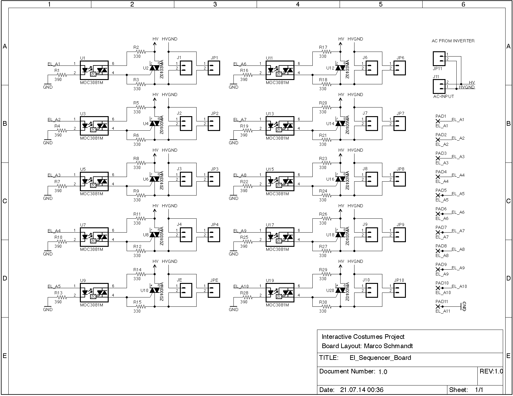

This repository contains everything associated with the group HEMASU from the Interactive Costumes project at Bauhaus University Weimar.
On this site you will find everything about our work on the Interactive Costumes project at the Bauhaus University Weimar.
The goal of this project was to design and develop and interactive costume for the stage.
